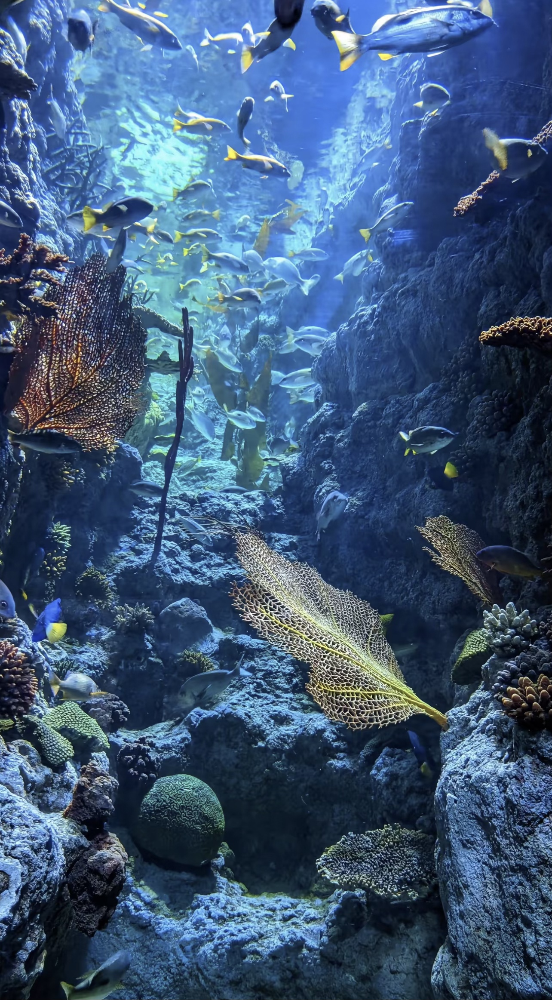
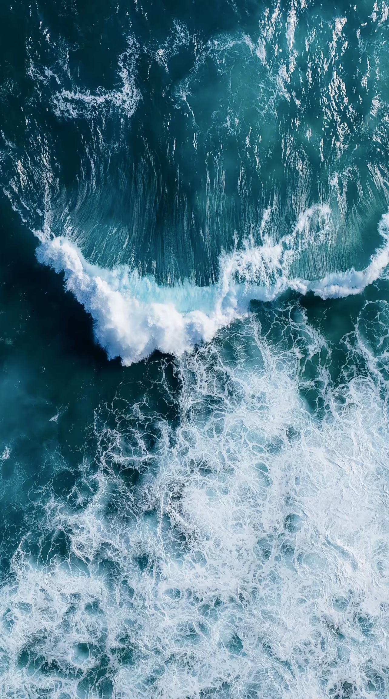
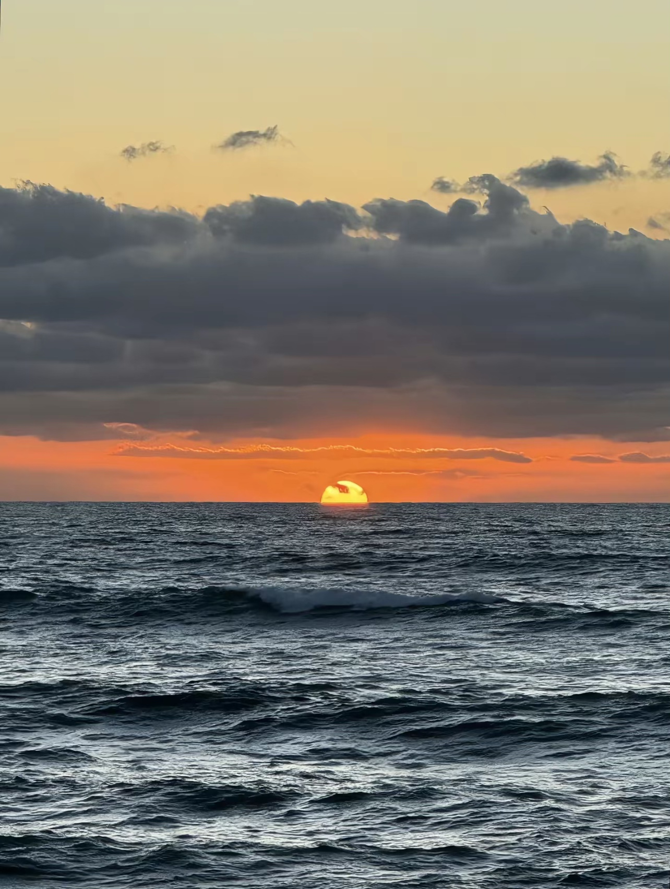

海洋的起源
海洋的起源可以从地球早期的演化过程中精确追溯。地球在约46亿年前形成后，最初是一颗炽热的岩浆星球。内部放射性元素衰变、频繁的陨石撞击以及持续的火山活动使其表面温度极高，任何液态水都无法存在。随着地球逐步冷却，火山喷发释放出的水蒸气、二氧化碳、氮等大量气体累积，形成了原始大气层。 当地表温度降至临界点以下，原本弥散在大气中的巨大水汽开始凝结，形成长时间、全球性的暴雨。最终，内部火山脱气提供的水与外来天体带来的水共同累积，构成了今日覆盖地表约71%的海洋。


